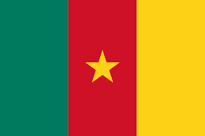

| Europa | Asia | África | Oceania | America |
|---|---|---|---|---|
| Alemania | Japón | Sudáfrica | Australia | México |
| Francia | Nepal | Marruecos | Nueva Zelanda | Estados Unidos |
| Italia | Rusia | Camerún | Fiyi | Brasil |
| Portugal | India | Nigeria | Samoa | Argentina |
| Grecia | China | Túnez | Kiribati | Venezuela |
Alemania es un país de Europa occidental con un paisaje de bosques, ríos, cadenas montañosas y playas en el mar del Norte.

Francia, en Europa Occidental, abarca ciudades medievales, villas alpinas y playas mediterráneas. París, su capital, es famosa por sus firmas de alta costura, los museos de arte clásico, como el Louvre, y monumentos como la Torre Eiffel.

Su capital, Roma, es hogar del Vaticano, de ruinas antiguas y de obras de arte emblemáticas. Otras ciudades importantes son Florencia, con obras maestras del renacimiento.

Su ubicación en el océano Atlántico influyó en muchos aspectos de su cultura: el bacalao en sal y las sardinas a la parrilla son platos nacionales, las playas del Algarve son un importante destino y gran parte de la arquitectura.

Atenas, su capital, conserva monumentos emblemáticos, como la ciudadela de la Acrópolis del siglo V a. C. con el templo del Partenón. Grecia también es famosa por sus playas, desde las arenas negras de Santorini hasta los centros turísticos de eventos en Miconos.

Japón es una nación insular del océano Pacífico con densas ciudades, palacios imperiales, parques nacionales montañosos y miles de santuarios y templos. El tren bala Shinkansen conecta las islas principales de Kyushu (con las playas subtropicales de Okinawa).
Famoso por sus templos y los montes del Himalaya, entre los cuales se encuentra el Everest. Katmandú, la capital, tiene un laberíntico barrio antiguo lleno de santuarios hindúes y budistas.
Es famosa por las compañías de ballet Bolshói de Moscú y Mariinski de San Petersburgo. San Petersburgo, fundada por el líder ruso Pedro el Grande, tiene el Palacio de Invierno de estilo barroco que actualmente alberga parte de la colección de arte del Museo del Hermitage Estatal.

En el norte, los monumentos históricos del imperio Mogol incluyen el complejo del Fuerte Rojo de Delhi y la enorme mezquita de Jama Masjid, junto con el icónico mausoleo del Taj Mahal en Agra.

En el norte, los monumentos históricos del imperio Mogol incluyen el complejo del Fuerte Rojo de Delhi y la enorme mezquita de Jama Masjid, junto con el icónico mausoleo del Taj Mahal en Agra.

Sudáfrica es un país del extremo más meridional del continente africano que se caracteriza por sus numerosos ecosistemas distintos. En el interior, el Parque Nacional Kruger es un destino para el safari, poblado de caza mayor. La Provincia Occidental del Cabo tiene playas, abundantes.

Se distingue por las influencias culturales bereberes, árabes y europeas. La medina de Marrakech es un barrio medieval similar a un laberinto con entretenimiento en su plaza de Yamaa el Fna y los zocos (mercados) que venden cerámicas, joyas y lámparas de metal.
Estado unitario organizado como república en el África central. «Limita al sur con Guinea Ecuatorial, a continuación con Gabón, y con República del Congo.
Nigeria, oficialmente República Federal de Nigeria, es un país de África occidental, que limita con Níger al norte, con Chad en el nordeste, con Camerún en el este y con Benín en el oeste.

En la capital, Túnez, el Museo del Bardo tiene exhibiciones arqueológicas que incluyen desde mosaicos romanos hasta arte islámico. El barrio de la medina de la ciudad abarca la enorme mezquita Al-Zaytuna y un animado zoco.
Australia es un país rodeado por los océanos Índico y Pacífico.El país es conocido por la Casa de la Ópera de Sídney, la Gran Barrera de Coral, una vasta área natural desértica conocida como Outback y especies animales únicas.

En la capital, Wellington, en la Isla Norte, se encuentra el extenso museo nacional Te Papa Tongarewa. El impresionante monte Victoria de Wellington, junto con Fiordland y Southern Lakes en la Isla Sur.

En la capital, Wellington, en la Isla Norte, se encuentra el extenso museo nacional Te Papa Tongarewa. El impresionante monte Victoria de Wellington, junto con Fiordland y Southern Lakes en la Isla Sur.
Muchas de sus islas tienen playas bordeadas de arrecifes e interiores escabrosos cubiertos de bosques tropicales con desfiladeros y cascadas.

Con lagunas y playas de arena blanca, muchas de sus islas están desiertas y ofrece una ubicación remota para la pesca, el buceo y la observación de aves.

Conocido por las playas en el Pacífico y el golfo de México, y su diverso paisaje de montañas, desiertos y selvas. Las ruinas antiguas, como Teotihuacán y la ciudad maya de Chichén Itzá, se distribuyen por el país, al igual que las ciudades de la época colonial española.

Conocido por las playas en el Pacífico y el golfo de México, y su diverso paisaje de montañas, desiertos y selvas. Las ruinas antiguas, como Teotihuacán y la ciudad maya de Chichén Itzá, se distribuyen por el país, al igual que las ciudades de la época colonial española.

Brasil es un vasto país de Sudamérica que se extiende desde la Cuenca del Amazonas en el norte hasta los viñedos y las enormes cataratas del Iguazú en el sur. Río de Janeiro, simbolizado por su estatua de 38 m del Cristo Redentor sobre el cerro del Corcovado.

El país es conocido por el baile y la música del tango. Su gran capital cosmopolita, Buenos Aires, se centra en la Plaza de Mayo.
A lo largo de su costa en el Caribe, hay islas turísticas tropicales, entre ellas la Isla de Margarita y el archipiélago Los Roques. Al noroeste está la cordillera de los Andes y la ciudad colonial de Mérida.